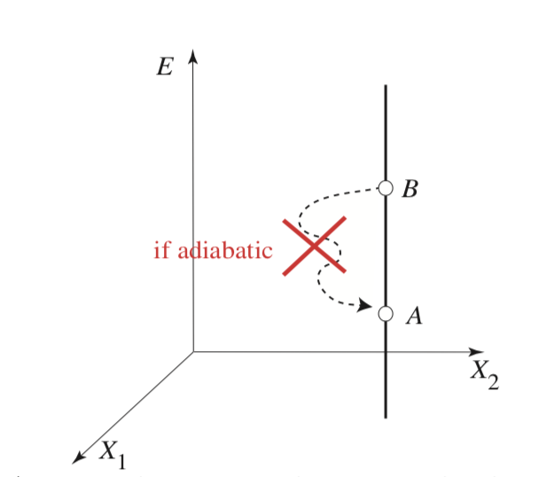
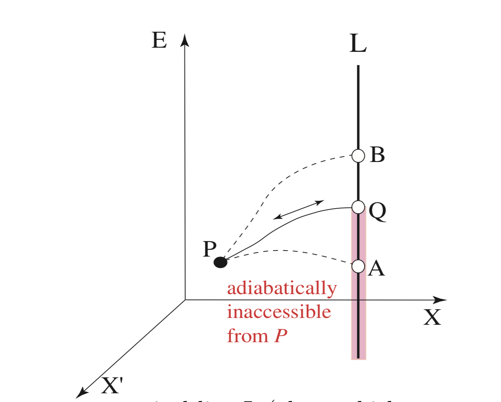
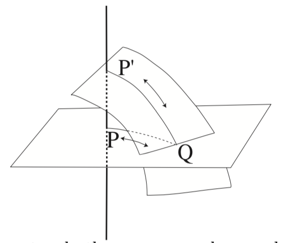
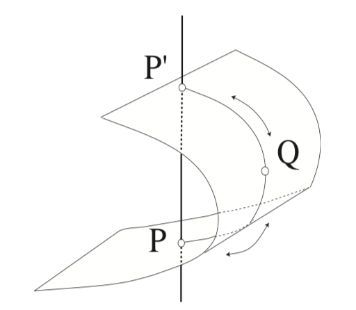
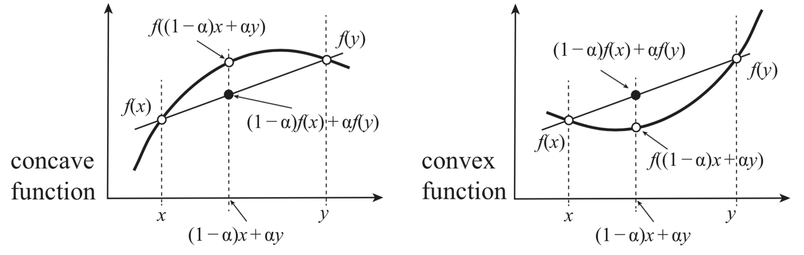
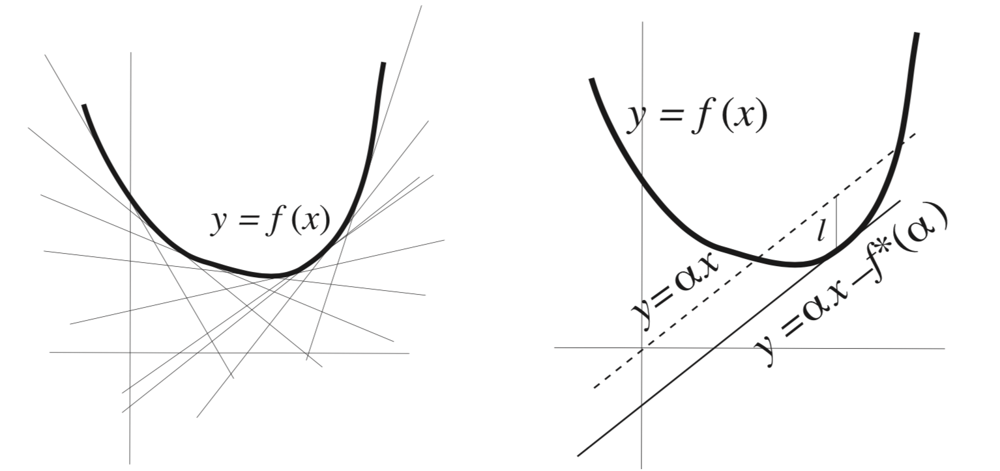

1. Review of the main principles of thermodynamics.¶
1.1. Summary of the key principles thermodynamics¶
Thermodynamics is a phenomoneological theory. Phenomoneological means that the macrosocpic phenomena are descibred terms of few quanitites which can be observed and measrued by macroscopic devices without any refernce to microscopic details.
The variables one deals in thermodynamics can be classifeid as extensive and intensive. Former depends on the size of system (volume, number of particles, energy, entropy) the latter is size independent (temperature, pressure, magnetic field, etc). Extensive variables are a priviledges set of variables becasue which uniquely describe the equilibrium sates of matter. Intensive variables are derived from extensive ones and are conjugate pairs to extensive ones. E.g \(V-P\), \(S-T\), \(N-\mu\) are conjugate pairs. Conjugate means one can replace extensive variables by intensive variables through legendre transformation.
Equilibrium is a special state of matter where the most simple descirption is possible in terms of extensive variables or properly chosen set of extensive+intensive variables. Equilibrium state is defined as a state where on the timescale of interest no measurable variable dsiplays any changes over time. In particular there are no macrosopic fluxex or flows of any form of energy or matter. In equilibrium, macroscopic matter assumes a particularly simple description in terms of few extensive quantites.
Fundmanetal equation in thermodynamics is the equation that binds together all extensive variables, e.g \(E(U,V,S,N_1, N_2, ...)\).
Transformations between equilibrium states is the central task of thermodynamics. Thermodynamics is fully equiped to predict the equilibrium state B which results form equilibrium state A through spontenous transformation upon removal of a constraint.
Quasi-static path: a dense successtion of equilibrium states that connects A with B in the space of extensive variables is constructed in order to compute changes in thermodynamic variables between states A and B. This equilibrium path is necessarily quasistatic for ensuring that system does not at all deviate from equilibrium state during transformation. The quasistatic path can also be reversible when the path from B to A can be re-traced with zero change in the universe while the system remains in the state of equilibrium. This necessitates intoduction of Entropy which differnetiates reversible from non-reversible changes.
Thermodynamic space is folliated into non-corssing adiabats. These adiabats are planes on whcih system can be transformed reversibly. The only way to “jump” from one adiabt to another is by heating or cooling the system, e.g transfer of heat.
The second Law establishes the directionality of processes. The first law is a reflection of conservation of “mechanical energy” in many body systems such studied in thermodynamics.
Any change in adiabatic system is accompanied either by entropy increase (non-equilibrium change) or entropy remaining the same (equilibrium-change)
1.2. Basic features of macrosystems¶
Let us list some of the most conspicious features of macroscopic systems consisting of many particles:
Additivitiy of Energy
Irreversibility of time evoluation.
Simplicity and stability of equiliubrium states.
“Invisibility” of fluctuations
1.2.1. On Addititivty of Energy¶
The additivity of energy can hold if we assumed pairwise potential description between particles and that these potentials decasye with distance faster than the \(r^{-3}\) in 3D.
%matplotlib inline
%config InlineBackend.figure_format = 'retina'
from ipywidgets import widgets
import matplotlib.pyplot as plt
import numpy as np
import scipy as sci
def U_LJ6_12(r,sig=1,eps=1):
'''Classic 6-12 Lennar Jones Potential
INPUT
r: interatomic distance in units sigma
sigma: atomic/particle size
OUTPUT
E: energy in units of epsilon
'''
x=r/sig
inv_r6 = 1/x**6
inv_r12 = inv_r6**2
return 4*eps*(inv_r12 - inv_r6)
def U_DH(r, a=1):
'''Screened electrostatic potential
'''
return 1/r * np.exp(-a*r)
fig, ax = plt.subplots(nrows=1, ncols=2,figsize=(11,4))
dist = np.linspace(1, 4,100)
ax[0].plot(dist, U_LJ6_12(dist,1,1),'--',lw=3,color='orange')
ax[0].set_xlabel('$r, [\sigma]$',fontsize=12)
ax[0].set_ylabel('$U_{LJ}(r)$',fontsize=12)
ax[1].plot(dist, U_DH(dist,1),'--',lw=3,color='green')
ax[1].set_xlabel('$r, [\sigma]$',fontsize=12)
ax[1].set_ylabel('$U_{DH}(r)$',fontsize=12)
ax[0].grid('on')
ax[1].grid('on')

1.2.2. On Irreversibility¶
If you play bridge long enough you will eventually be dealt any grand-slam hand, not once but several times. A similar thing is true for mechanical systems governed by Newton’s laws, as the French mathematician Henri Poincare (1854-1912) showed with his recurrence theorem in 1890: if the system has a fixed total energy that restricts its dynamics to bounded subsets of its phase space, the system will eventually return as closely as you like to any given initial set of molecular positions and velocities. If the entropy is determined by these variables, then it must also return to its original value, so if it increases during one period of time it must decrease during another.

Fig. 1.1 Here is my figure caption!¶
Zermello is right for small systems. A dynamical system will alwasy return to its starting configuration hence irreversibility is not a property of micrsccopic systems.
Boltzman is right for large systems becasue a likelihhood of recurrence for macrosystem happening is beyond the lifetime of a universie. Case closed.
1.3. Extensive vs Intensive¶
The extensive variables (E,V,N) are a priviledged set of variables in thermodynamin space becasue:
Proportional to the size of the system
Uniquely describe macroscopic states
Only mechanics/electromagnetis is needed without introdcuing derived notions of heat and temperature.
The intensive variables (T, P, \(\mu\)) are derived from extensive variables and are therefore derived, conveient variables for controlling experiments. Thus, intensive variables do not have the same status of extenisve variables.
A glass of water with and without ice cube can both be under 1 atm and 0 C whereas values of energy, entropy volume will be different.
1.4. Thermodynamic coordinates and thermodynamic space.¶
State of equilibrium is completely defined as a point in the space of thermodynamic coordinates: \(E, V, N, S\). Theese coordinates have a unique and well defined values for each equilirbum state irresective to how such state was created. Weather through violent non-equilibrimu process or calm quasi-static sequence of equilibrou states. This is why the functions of extensive variables \(E(S,V,N)\) or \(S(E,V,N)\) are called state functions and their changes are given by differnee between initial or final state only \(\Dleta E =E_f -E_i\), \(\Dleta S =S_f -S_i\). The work \(W\) or heat \(Q\) on the other hand are process dependent characterizing the way energy is trasnfered to the system and not characterizing equilibrium states itself.
Study of thermodynamic processes than boils down to study of transofrmations between equilibium A to equilibrium B in the thermodynamic space spanned by thermodynamic coordinates. E.g computing \(\Delta E = E_B - E_A\)
To compute changes between equilirbum state A and B we construct reversible (read equilirbium) and quasistatic path connecting the two states which allwos writing down exact differntials for state changes.
1.5. Reversible, quasistatic process¶

1.6. Plank’s statment of 2nd law¶
“Planck’s principle: For any adiabatic process with all the work coordinates returning to their original values \(\Delta E \geq 0\) ” M Plank
In other words doing pure mechanical work on insulated(read adiabatic) system with no net change in mechanical variables results in energy either going up or remaining unchanged \(\Delta E \geq 0\). Thus we can not through mechanical work “steal” energy away from closed system wihtout any other change in the environment.
1.7. Thermodynamic space is made up of non-crossing adiabats.¶
1.8. Nope-1¶
1.9. Nope-2¶
1.10. First Law¶
Mechanical energy conservation law extended to many-body thermal systems
1.11. Second Law¶
For an adiabatic quasisatic process Entropy always increases or remains the same (in equilibrium state)
1.12. Gibbs relation¶
Given the energy as a function of extensive variables \(E(S,V,N)\) we can write down its full differntial.
We identify intensive variables conjugate to extenive variables:
- \[T = \Big(\frac{\partial E}{\partial S} \Big)_{V,N}\]
- \[P = \Big(\frac{\partial E}{\partial V} \Big)_{S,N}\]
- \[\mu = \Big(\frac{\partial E}{\partial N} \Big)_{S,V}\]
This is known as Gibbs relation in Thermodynamics and is a starting point for thermodynamic calculations
$\(\boxed{dE= TdS - pdV +\mu dN}\)$
1.13. Gibbs Duhem relation¶
Extensivity proeprty implies linear scaling with respect to extensive variables. In other words extensive variables are additive quantities
Now take derivative of E and compare with Gibbs relation
1.14. Other useful thermodynamic derivatives¶
1.14.1. Heat capacities at constnat P and V. Thermal stability requires \(c_v,c_p\geq 0\)¶
- \[C_p = \Big(\frac{d Q}{dT} \Big)_{p,N}\]
- \[C_v = \Big(\frac{d Q}{dT} \Big)_{v,N}\]
1.14.2. Expansion and compression coefficients. Mechanical stability requires \(\kappa_T\geq 0\)¶
Thermal expansion coeff: $\(\alpha = \frac{1}{V}\Big(\frac{d V}{dT} \Big)_{p,N}\)$
Isothermal compressibility coeff: $\(\kappa_T = -\frac{1}{V}\Big(\frac{d V}{dP} \Big)_{T,N}\)$
1.15. Ideal Gas entropy example¶
\(E = \frac{3}{2}Nk_B T\) and \(PV = Nk_BT\) for monoatomic gas
1.16. Convexity of Entropy and Concavity of Energy¶
Entropy S(E,V,N) of a composite system is additive over each one of the individual components. The entropy is therefore continuous, differentiable, and monotonically increasing function of the energy \(S(E)\)
1.17. Free Energies: Swapping extensive variables for intensive ones¶
1.18. Legendre Transform of convex functions.¶
Genrally speaking legendre transform is transforming one convex function \(f(x)\) into another \(f^*(\alpha)\). Morover, the trnasofmraiton isinvolutive meaning it is its own inverse. If we apply legendre trnsform to a function if single variable twice we get back to orginal function!
1.18.1. Example of Legendre transform-1¶
f = lambda x: x**2
g = lambda a: a*(a/2) - f(a/2) # deriv f(x) = 2x = a ---> x = a/2
@widgets.interact(a=(0,2,0.2))
def legendre_transf(a):
fig,ax =plt.subplots(nrows=1,ncols=2, figsize = (10,4))
x = np.linspace(0,1,100)
ax[0].plot(x,f(x),lw=3)
ax[0].plot(x, a*x-g(a),'--')
ax[0].set_title('$f(x) = x^2$')
ax[0].legend(['f(x)', f"$y = ax-g(a)$ = {a}x -{g(a):.2f}"])
ax[0].set_xlim(0,1.2)
ax[0].set_ylim(0,1.2)
ax[0].set_xlabel('x',fontsize=20)
ax[0].set_ylabel('f(x)',fontsize=20)
ax[0].grid('on')
ax[1].set_title('$g(a) = max_x [ax-f(x)]= a^2/2$')
ax[1].plot(a,g(a),'o',color='orange',ms=12)
ax[1].plot(np.linspace(0,2,10),g(np.linspace(0,2,10)),'-',lw=3, color='red')
ax[1].set_xlim(0,1.2)
ax[1].set_ylim(0,1.2)
ax[1].set_xlabel('a',fontsize=20)
ax[1].set_ylabel('g(a)',fontsize=20)
ax[1].grid('on')
1.18.2. Example of Legendre transform-2¶
f2 = lambda x: np.exp(x)
g2 = lambda a: a*np.log(a) - f2(np.log(a)) # deriv f(x) = e^x = a ---> x = log a
@widgets.interact(a=(1,3,0.2))
def legendre_transf(a):
fig,ax =plt.subplots(nrows=1,ncols=2, figsize = (10,4))
x = np.linspace(0,1,100)
ax[0].plot(x,f2(x),lw=3)
ax[0].plot(x, a*x-g2(a),'--')
ax[0].set_title('$f(x) = x^2$')
ax[0].legend(['f(x)', f"$y = ax-g(a)$ = {a:.2f}x-{g2(a):.2f}"])
ax[0].set_xlim(0,1.2)
ax[0].set_ylim(0,3)
ax[0].set_xlabel('x',fontsize=20)
ax[0].set_ylabel('f(x)',fontsize=20)
ax[0].grid('on')
ax[1].set_title('$g(a) = max_x [ax-f(x)]= a(log a-1)$')
ax[1].plot(a,g(a),'o',color='orange',ms=12)
ax[1].plot(np.linspace(0,3,10),g(np.linspace(0,3,10)),'-',lw=3, color='red')
ax[1].set_xlim(0,3)
ax[1].set_ylim(0,3)
ax[1].set_xlabel('a',fontsize=20)
ax[1].set_ylabel('g(a)',fontsize=20)
ax[1].grid('on')
1.19. Legendre Transform numerically (via numpy/scipy )¶
def legendre_transf(f, a=1, guess_0=0):
'''Legendre transform function f to g
INPUT:
f <-- function
a <-- value of new variable
OUTPUT:
g(a) = min_x[a*x-f(x)] legendre transform at point a
'''
min_x, = sci.optimize.fmin(lambda x: f(x)-a*x, guess_0)
return a*min_x - f(min_x)
f = lambda x: x**2+x**4
#g = [legendre_transf(f, a) for a in np.linspace(0,1,100)]
1.20. Legendre Transform via SymPy¶
from sympy import *
x, x_min, a, a_min, f, g = symbols('x x_min a a_min f g') # Definte symbols
---------------------------------------------------------------------------
ModuleNotFoundError Traceback (most recent call last)
<ipython-input-10-126ef8a0bc4d> in <module>
----> 1 from sympy import *
2
3 x, x_min, a, a_min, f, g = symbols('x x_min a a_min f g') # Definte symbols
ModuleNotFoundError: No module named 'sympy'
f = x**2 # Define function of x
x_min, = solve(a-diff(f,x), x) # solve for maximum
g = a*x_min - f.subs(x,x_min) # Define function of a as leg transform of f(x)
f, g
(x**2, a**2/4)
ff = lambdify(x, f)
gg = lambdify(a, g)
#plt.plot(x,f(x))
#plt.plot(x,g(x))